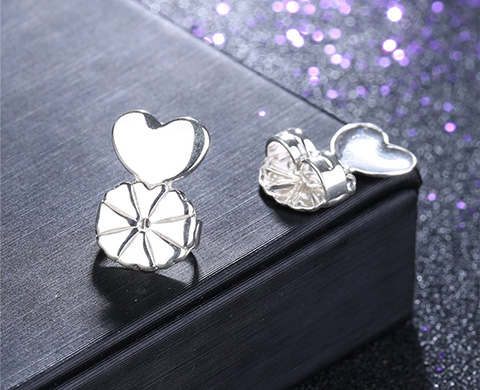
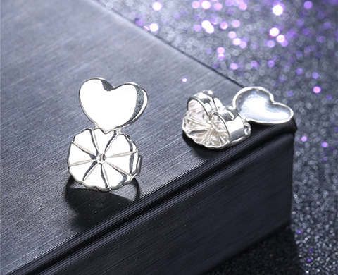

Mi piace: 2 511
Elegante correttore - una buona scelta per le donne di qualsiasi età
 Ha un aspetto elegante e raffinato, si fonde perfettamente con gioielli in metalli preziosi, diversi tipi di bigiotteria
Ha un aspetto elegante e raffinato, si fonde perfettamente con gioielli in metalli preziosi, diversi tipi di bigiotteria  Il proprietario di questo accessorio acquisterà fiducia
Il proprietario di questo accessorio acquisterà fiducia - Il meccanismo di chiusura sicuro previene la perdita di orecchini costosi
 L'accessorio impedirà la perdita nella presentazione degli orecchini da una caduta improvvisa
L'accessorio impedirà la perdita nella presentazione degli orecchini da una caduta improvvisa
19 ore fa


 
